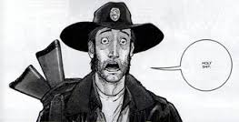
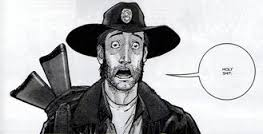

These are pictures of Rick Grimes inside the comic book and inside The Walking Dead t.v. show. Even thought the two characters don't look the same the actor and the comic book figure's personalities are close to identical. A man who is a great leader, but seemingly doesn't want the title.A man who is willing to do anything to same his family and friends, but tries to keep a piece of his humanity. Someone who wants to rebuild society with fairness, safety, trust, and without fear.
 


Andrea now is the recent comics the lover of Rick, the step mother of to Rick's son Carl, and an overall exceptional sniper. In the show the only things that are consistant in the show is that she is blond, had a younger sister, had a close relationship with Dale (not romantic like in the comic book), and she was a great shot.